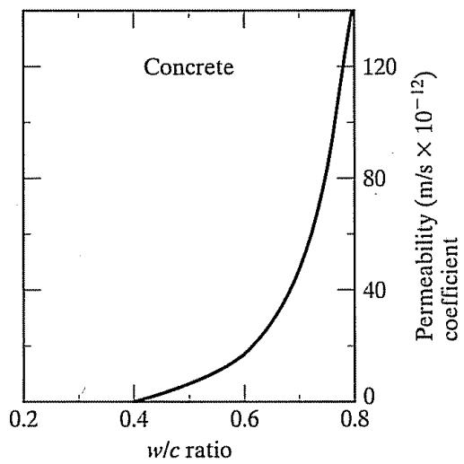
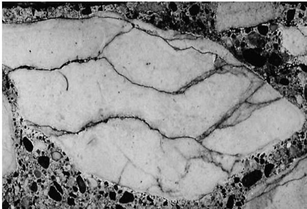
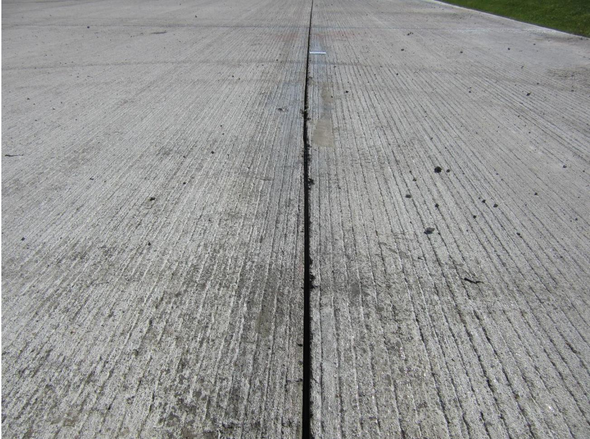
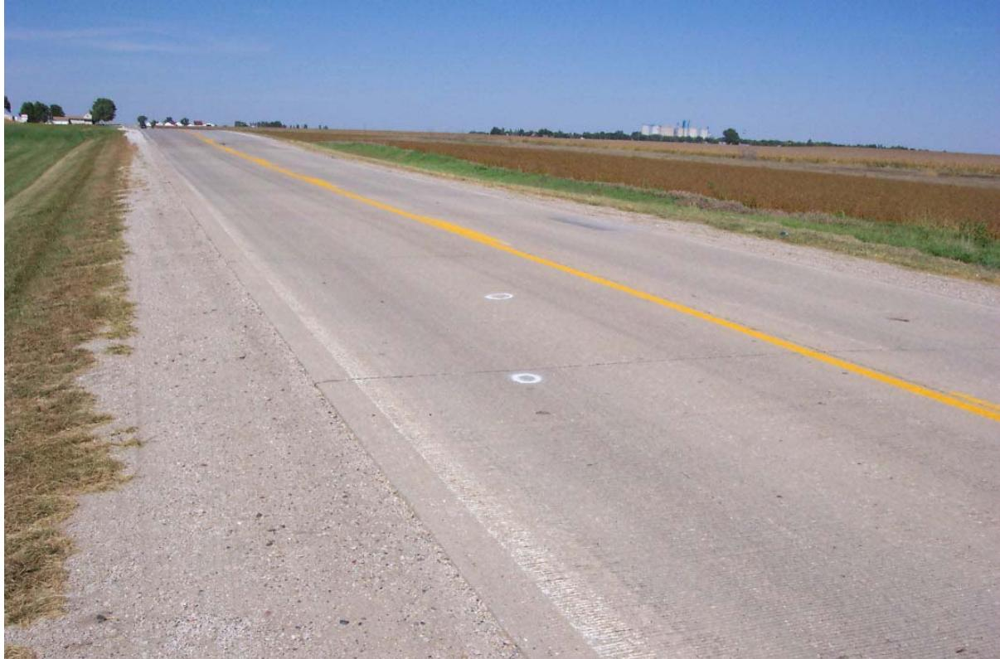
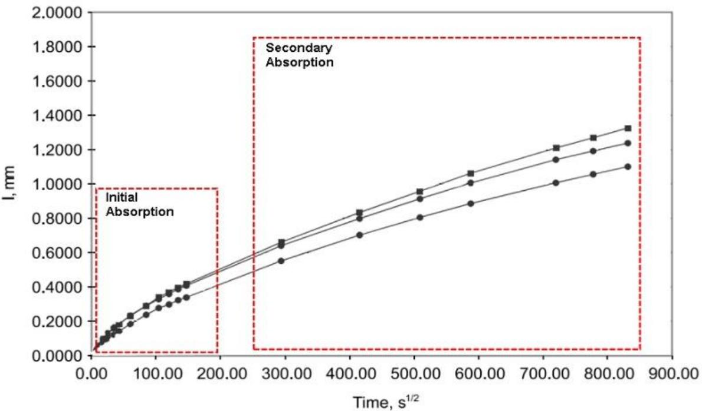
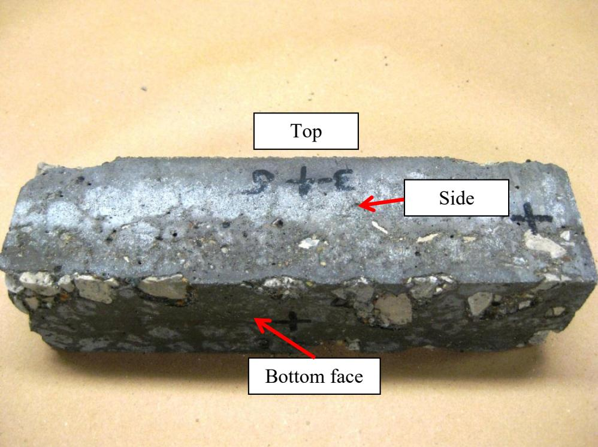
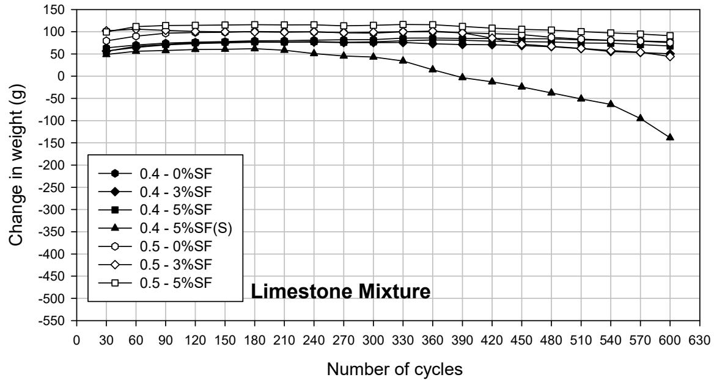
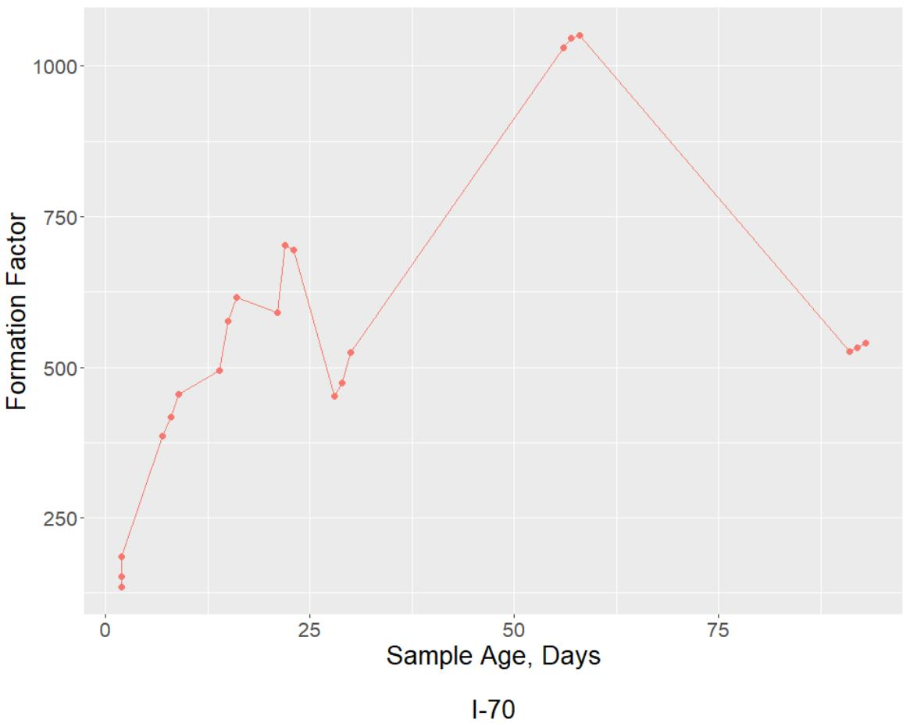

Degree of Saturation
The degree of saturation, defined as the ratio of water volume to total open pore volume expressed as a percentage, serves as a critical threshold property for freeze-thaw durability by quantifying the volume of water-filled capillary pores available to generate hydraulic and osmotic pressures during ice formation [2]. When concrete reaches a high degree of saturation, the expansion of freezing water creates significant internal stresses that can lead to deterioration if not mitigated by an adequate air-void system [6]. Properly spaced entrained air voids act as pressure relief valves, allowing ice to expand into adjacent spaces and thereby reducing the hydraulic pressures associated with high saturation levels [5]. When concrete reaches a critical degree of saturation (DOScrit), freeze-thaw cycling can cause rapid deterioration. Reducing the rate at which concrete approaches DOScrit is a primary mechanism by which sealers protect against freeze-thaw damage [1].
Sources (11)
Introduction to Critical Saturation (DOScrit)
- Concrete below DOScrit can generally withstand freeze-thaw cycling without damage
- DOScrit is approximately 85–91% depending on concrete mix and air-void system
- Once concrete exceeds DOScrit, each freeze-thaw cycle causes progressive damage
Mechanisms of Water Absorption and Capillary Suction
Freezable water exists primarily in larger capillary pores, which freeze near or slightly below normal freezing points; consequently, reducing the water-to-binder ratio minimizes these pores and lowers permeability [2]. Aggregate freezing-thawing damage requires the simultaneous presence of non-durable aggregate, critical degree of saturation, and freezing-thawing cycles, conditions which are directly or indirectly controlled by particle size, pore structure, absorption, mineralogy, and impurities [3]. Regarding fluid transport, the initial degree of saturation significantly influences subsequent behavior, as samples with higher initial moisture content absorb less water and exhibit lower absorption rates during sorption tests, indicating that pre-existing saturation levels modulate the concrete’s capacity for further water ingress [4]. Furthermore, the presence of bulk water versus only capillary-held water in granular subbases has little differential effect on the degree of saturation achieved by certain coarse aggregate materials during simulated pavement exposures [5].
 Unconfined freezing-thawing test using ASTM C666 conditioning versus Iowa pore index [3]
Unconfined freezing-thawing test using ASTM C666 conditioning versus Iowa pore index [3]
Capillary suction is defined by the Young-Laplace equation as a function of surface tension, contact angle, and pore radius; in this relationship, increasing the water contact angle reduces molecular attraction between water and concrete, thereby decreasing infiltration, an inverse correlation that allows initial absorption to be predicted via simple laboratory contact angle measurements [1]. Additionally, when deicing salts are present, the rate of water absorption in concrete decreases proportionally with the square root of the ratio of surface tension to viscosity, altering both sorption and re-absorption behavior [4]. Salt residues left in pores after drying further modify fluid ingress pathways compared to pure-water exposure [4].
 presents the water contact angle results as a function of water absorption. θ vs 5 hrs. absorption [1]
presents the water contact angle results as a function of water absorption. θ vs 5 hrs. absorption [1]
Aggregate Durability and Pore Structure
High-strength or very low permeability concretes rarely reach critical saturation because their fine pore structure retains water via surface tension, preventing it from freezing at ordinary ambient temperatures [2]. Concrete mixtures with high water-to-cementitious material ratios possess increased volumes of capillary pores that saturate rapidly, leading to a significantly higher initial rate of absorption [6]. To improve durability, increasing the maximum aggregate size can be beneficial by reducing the volume of cement paste, which is the mixture component most sensitive to physical or chemical attack [7].

Influence of w/c on the permeability of (a) cement paste and (b) concrete [7]The critical degree of saturation required for freeze-thaw damage in concrete aggregates is 91.7%, as established by Verbeck and Landgren (1960). [8]

Frost Damage Associated with Concrete Aggregate: D-cracking at a Pavement Joint Intersection (left) and Fractured Carbonate Aggregate (right) [8]Air Entrainment Requirements
The limiting water-to-binder ratio below which air entrainment is generally not required for freeze-thaw durability is approximately 0.25, as all available water is consumed by cement hydration [2]. In concrete with a marginal air-void system, sealers can provide extra protection against frost action cycles, whereas in concrete with a proper air-void system, they may offer no appreciable effect; notably, the SME sealer specifically aggravated resistance to freeze-thaw cycles regardless of the air-void quality [1]. Furthermore, higher quality air-void systems maintain critical degrees of saturation above 85%, whereas lower quality systems may fall below this threshold, directly impacting freeze-thaw resistance [6].
 Durability factor as a function of w/b [2]
Durability factor as a function of w/b [2]
Additionally, air permeability measurements do not correlate with water absorption rates in sealed concrete, indicating that air permeability tests are ineffective for characterizing the durability of sealer-treated concrete [1]. Breathability remains critical because vapor must escape when relative humidity drops below 100% to reduce saturation [1].
 Air (gas) permeability index for concrete [1]
Air (gas) permeability index for concrete [1]
Testing Methods for Degree of Saturation
The degree of saturation test measures:
- Initial water absorption via capillary suction (immersion to 1 inch depth)
- Evolution of water uptake over time (mass measurements at intervals)
- Time to reach DOScrit under controlled conditions
The test was performed on vertically sawn faces (not broom-finished surfaces) to simulate the exposed surface at pavement joints. [1]

SoTa application on CR W-61 in Washington County [1]Ground penetrating radar (GPR) can detect aggregate-induced cracking associated with frost attack even when surface symptoms like scaling are not yet visible. [9]
 High-Resolution GPR Illustrating the Periodic Signal from the Base of US 63 [9]
High-Resolution GPR Illustrating the Periodic Signal from the Base of US 63 [9]
GPR responses indicating moisture gradients or variable support beneath the pavement can signal deteriorated concrete or poor subgrade-concrete interface conditions. [9]

Overview of the GPR Site for the P 73 Pavement Site (looking north) [9]Absorption Behavior Stages in Sealed Concrete
Two distinct absorption phases were observed [1]. The first is primary absorption (0–5 days), characterized by rapid capillary suction where sealers with higher contact angles showed reduced primary absorption; the second is secondary absorption (beyond 5 days), during which the absorption rate converges toward control for most sealers, though only 40% silane and SME maintained reduced absorption through this phase [1]. The degree of saturation at the intersection between initial and secondary absorption phases indicates the specific point where the capillary pore system becomes fully saturated [6].

Steve Lane, Virginia Transportation Research Council Figure 5. Initial and secondary absorption [6]Evaluation of Sealer Effectiveness
The time required to reach DOScrit under given exposure conditions is a key indicator of sealer effectiveness, as the time to DOScrit directly predicts the service life improvement provided by a sealer under constant exposure. While sealers that only reduce primary absorption provide limited long-term protection, products that reduce both primary and secondary absorption (hydrophobic sealers) provide the greatest extension of time to critical saturation; consequently, the degree of saturation test is the most useful single test for evaluating sealer effectiveness against freeze-thaw distress.
Furthermore, sealers that function as pore blockers, such as SME, can seal in moisture during drying phases, resulting in higher residual saturation levels than untreated controls. This retention of internal moisture may be detrimental to freeze-thaw performance despite reducing initial water uptake [1].
 Moisture uptake results with time [1]
Moisture uptake results with time [1]
 Degree of saturation for concrete specimens: mAir (top left), mOXY (top right), and mDcrack (bottom) [1]
Degree of saturation for concrete specimens: mAir (top left), mOXY (top right), and mDcrack (bottom) [1]
Time To Critical Saturation
Phase 1 — Time to DOScrit (Single Mix)
| Treatment | Days to DOScrit | |-----------|----------------| | Control | 4 | | LS | 4 | | SC | 4 | | SoTa | 17 | | Acrylic | 79 | | SME | 50 | | 40% Silane | 113 |
Phase 2 — Time to DOScrit (Three Distress-Prone Mixes)
| Treatment | mAir | mCaOXY | mDcrack | |-----------|------|--------|---------| | Control | 4 | 6.5 | 2.5 | | 40% Silane | 25 | 38 | 29 | | SoTa | 13 | 16 | 10.5 | | SME | 15 | 18 | 6 |
In concrete pavements exposed to moisture, the degree of saturation increases significantly during the first year of service before stabilizing, with saturation levels consistently higher near the bottom of the slab than at the top. [5]
In laboratory freeze-thaw testing, critical saturation levels are typically exceeded only within a fraction of an inch above the water level, despite high capillary suction in hydrated cement paste. [4]

Typical sample after 300 cycles [4]Environmental and Curing Influences on Saturation
The presence of deicing salts increases the degree of saturation by altering solution properties such as surface tension, viscosity, and water activity; while this reduces absorption rates, it leads to higher overall saturation levels due to hygroscopic salt retention [4]. This concentration-dependent effect persists during wetting-drying cycles, making salt-exposed concrete more susceptible to freeze-thaw damage than pure-water exposure [4]. Furthermore, submerged curing in saturated lime water during accelerated curing regimes can increase concrete surface saturation levels, leading to lower resistance to freeze-thaw cycling compared to non-submerged moist curing methods [10].

Weight change on the beams for 600 freezing and thawing cycles (S denotes sample tested in salt solution) [4]In the context of scaling resistance testing, a seven-day pre-saturation period with deicer solution prior to freezing cycles reduces osmotic potentials at the onset of freezing, which is a critical factor [10].
Predictive Metrics: Saturation Coefficients and Formation Factors
The saturation coefficient (m) is calculated as the ratio of the resistivity of a sealed sample to that of a saturated sample, serving as a quantitative measure for evaluating concrete durability against freeze-thaw cycles [11]. To normalize electrical test results, the formation factor is calculated by directly relating them to the conductivity of the pore solution as well as the concrete pore volume and connectivity [6]. Furthermore, the formation factor can be utilized alongside critical saturation metrics to predict concrete durability specifically for freeze-thaw resistance [11].

Formation factor versus age [6]Connections
- Penetrating Sealers — sealer treatment reduces rate of saturation increase
- Freeze-Thaw Durability — critical saturation is the threshold for freeze-thaw damage
- Water Absorption Test — related test measuring absorption rate
- Contact Angle Measurement — surface wettability affects capillary suction
- Desorption Test — measures vapor escape after saturation
- Interfacial Transition Zone — ITZ provides preferential pathway for water entry
- Evaluation of Penetrating Sealers for Concrete — TR-765 study measuring DOS
Deicing salts concentrate preferentially in the interfacial transition zone (ITZ) around coarse aggregate particles, as evidenced by elemental mapping showing elevated chlorine and calcium levels adjacent to aggregates. This localized saturation may accelerate ITZ deterioration even when bulk concrete remains below critical saturation. [4]
References
- J. T. Kevern, G. Adil, P. Taylor, S. Sadati, and K. Wang, "Evaluation of Penetrating Sealers for Concrete," National Concrete Pavement Technology Center, Iowa State University, Ames, IA, Rep. TR-765, 2022. [Online]. Available: https://www.intrans.iastate.edu/wp-content/uploads/2022/06/concrete_penetrating_sealers_eval_w_cvr.pdf
- K. Wang, G. Lomboy, and R. Steffes, "Investigation into Freezing-Thawing Durability of Low-Permeability Concrete with and without Air Entraining Agent," National Concrete Pavement Technology Center, Ames, IA, 2009. [Online]. Available: https://www.intrans.iastate.edu/wp-content/uploads/2018/03/low-permeability-concrete.pdf
- F. Bektas, W. Cai, and K. Wang, "Aggregate Freezing-Thawing Performance Using the Iowa Pore Index," Center for Transportation Research and Education, Ames, IA, 2016. [Online]. Available: https://www.cptechcenter.org/wp-content/uploads/2018/03/aggregate_freezing-thawing_using_Iowa_pore_index_w_cvr.pdf
- P. Taylor, L. Sutter, and J. Weiss, "Investigation of Deterioration of Joints in Concrete Pavements," National Concrete Pavement Technology Center, Ames, IA, Rep. TPF-5(224), 2012. [Online]. Available: https://www.intrans.iastate.edu/wp-content/uploads/2018/03/joint_deterioration_penetrating_sealers_field_study_w_cvr.pdf
- J. Grove, G. Fick, T. Rupnow, and F. Bektas, "Material and Construction Optimization for Prevention of Premature Pavement Distress in PCC Pavements," National Concrete Pavement Technology Center, Ames, IA, Rep. TPF-5(066), 2008. [Online]. Available: https://www.intrans.iastate.edu/wp-content/uploads/2018/03/mco-final.pdf
- J. Gross, J. Weiss, T. Ley, P. Taylor, N. Weitzel, T. Van Dam, G. Smith, and C. Jones, "Performance-Engineered Concrete Paving Mixtures," National Concrete Pavement Technology Center, Iowa State University, Ames, IA, Rep. TPF-5(368), 2022. [Online]. Available: https://www.intrans.iastate.edu/wp-content/uploads/2023/04/performance-engineered_concrete_paving_mixtures_w_cvr.pdf
- P. Taylor, F. Bektas, E. Yurdakul, and H. Ceylan, "Optimizing Cementitious Content in Concrete Mixtures for Required Performance," National Concrete Pavement Technology Center, Ames, IA, 2012. [Online]. Available: https://www.intrans.iastate.edu/wp-content/uploads/2018/03/taylor_ocm_w_cvr2.pdf
- F. Bektas, K. Wang, and J. Ren, "Carbonate Aggregate in Concrete," Institute for Transportation, Ames, IA, 2015. [Online]. Available: https://www.intrans.iastate.edu/wp-content/uploads/2018/03/201514.pdf
- S. Schlorholtz, B. Dawson, and M. Scott, "Development of In Situ Detection Methods for Materials-Related Distress (MRD) in Concrete Pavements: Phase 1," Center for Portland Cement Concrete Pavement Technology, Iowa State University, Ames, IA, Rep. CTRE 00-96, 2003. [Online]. Available: https://www.intrans.iastate.edu/wp-content/uploads/2018/03/mrd.pdf
- R. D. Hooton and D. Vassilev, "Deicer Scaling Resistance of Concrete Mixtures Containing Slag Cement, Phase 2," National Concrete Pavement Technology Center, Ames, IA, Rep. TPF-5(100), 2012. [Online]. Available: https://www.intrans.iastate.edu/research/completed/deicer-scaling-resistance-of-concrete-pavements-bridge-decks-and-other-structures-containing-slag-cement-phase-2-evaluation-of-different-laboratory-scaling-test-methods/
- W. J. Weiss and L. Montanari, "Guide Specification for Internally Curing Concrete," National Concrete Pavement Technology Center, Ames, IA, Rep. TPF-5(286), 2017. [Online]. Available: https://www.intrans.iastate.edu/wp-content/uploads/2018/09/IC_guide_spec_w_cvr.pdf
Feedback on this page